Guía de uso: de encontrar un proceso en SECOP a cobrarlo, paso a paso.
Todo lo de SECOP está en la app Lumak, que abre al entrar. El menú va en el orden en que trabajas:
| Tablero | Cómo va todo: cierres de la semana, dinero en juego, lo que falta por cobrar, fechas legales y si lo automático corrió. |
| Todo lo publicado | Lo publicado que aún recibe ofertas. «Traer a mi flujo» lo pasa a tus procesos; «Importar con enlace», si te pasaron un enlace. |
| Mis procesos | Tus licitaciones en tarjetas, por etapa. Aquí se trabaja la oferta. |
| Contratos | Lo que ganaste: un proyecto por contrato, con sus tareas y su pago. |
| Por cobrar | Las facturas que falta pagar. |
| Mercado | Estadísticas y competidores, con el histórico de SECOP. |
| Empresa | Kit de documentos, experiencia, fechas legales y datos de la empresa. |
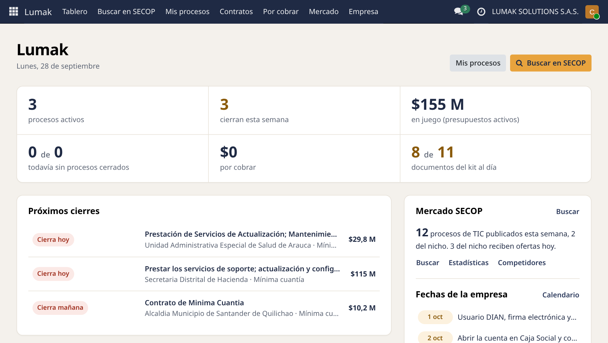
| Solo (lo normal) | Cada mañana a las 7:30 el monitor trae los procesos del nicho y los deja en Mis procesos, en «Por revisar», con el análisis de precio. |
| Lo encuentras tú | Todo lo publicado → «Traer a mi flujo». |
| Te pasan un enlace | Todo lo publicado → «Importar con enlace»: pegas el enlace, el ID (CO1.REQ…) o la referencia. |
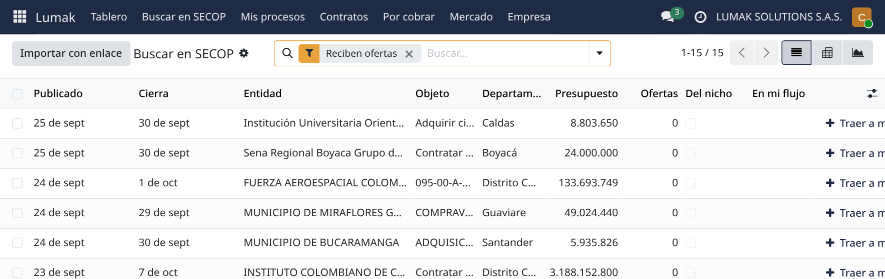
Una tarjeta es un proceso. Se mueve arrastrándola, o con clic en la etapa en la barra de arriba de su ficha. Odoo hace cosas solo al entrar a las tres últimas.
TúLees la invitación con el botón «Abrir en SECOP» y, en SECOP II, pulsas «Suscribirme». Si tienes dudas, haces observaciones.
SigueSi vas: «Preparando oferta». Si no (limitado a MiPyME hasta el 26 sep 2027, acuerdo marco o no te conviene): «Perdido» con el motivo.
Odoo soloCrea la cotización al tope del presupuesto (es tu oferta económica) y las 4 primeras actividades, con fechas contadas desde el cierre.
TúCosto estimado, precio, kit al día, documentos firmados, presentar en SECOP II.
SigueCuando SECOP II dice «Presentada»: «Presentada».
Odoo soloAgenda la quinta actividad: revisar el informe y subsanar.
TúEsperas el informe y subsanas si te lo piden (la oferta económica nunca se subsana).
SigueSi ganas: botón «Ganado». Si no: «Perdido» y anotas el precio ganador en la pestaña SECOP.
Odoo soloConfirma la cotización y abre el contrato en Contratos, con sus tareas y su pago. Da igual si arrastras la tarjeta o pulsas «Ganado».
TúApruebas el contrato electrónico en SECOP II. Lo demás, en la sección 4.
Perdido se marca en cualquier etapa, con el motivo. Odoo saca el proceso del tablero, borra sus actividades pendientes, cancela la cotización en borrador y quita el cierre del calendario.
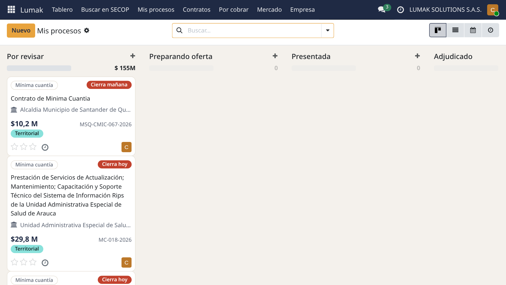
Arriba dice siempre el siguiente paso. La pestaña SECOP tiene el resto: número, fechas, presupuesto, costo, precio mínimo y el análisis de precio para ganar.
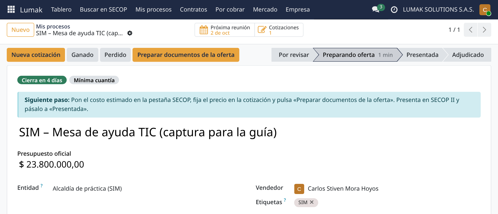
Una actividad es un recordatorio con fecha. Las 5 son obligatorias para ofertar bien. Aparecen en la ficha del proceso y en el reloj de la barra de arriba: verde a tiempo, naranja hoy, rojo vencida.
| La cumpliste | «Marcar como hecho». |
| La fecha no sirve | «Editar» y la mueves. Se cuentan días calendario, así que a veces caen en fin de semana. |
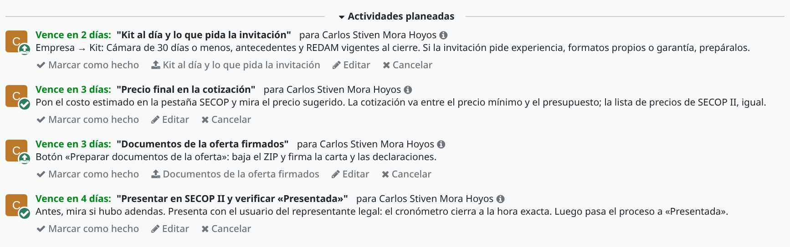
Al entrar a «Preparando oferta»
Cámara de 30 días o menos, antecedentes y REDAM vigentes al cierre (Empresa → Kit). Si la invitación pide experiencia, formatos propios o garantía, los preparas.
Pones el costo estimado en la pestaña SECOP y miras el precio sugerido. La cotización va entre el precio mínimo y el presupuesto, y la lista de precios de SECOP II debe ser igual.
Botón «Preparar documentos de la oferta»: bajas el ZIP y firmas la carta y las declaraciones.
Antes miras si hubo adendas. Presentas con el usuario del representante legal: el cronómetro cierra a la hora exacta.
Al entrar a «Presentada»
Si la entidad pide aclarar o completar un documento, respondes por «Mensajes» dentro del plazo. Si se vence, quedas fuera.
Al pasar a «Adjudicado», la cotización se vuelve orden de venta y nace el contrato en Contratos. Desde el proceso llegas con el botón «Proyecto del Contrato». Desde el contrato vuelves con «Proceso SECOP».
El contrato trae 13 tareas en 4 columnas: legalización, ejecución, facturación y cierre. Son una lista para no olvidar nada: cuando termines una, márcala «Hecha»; si no aplica, «Cancelada». Las indispensables:
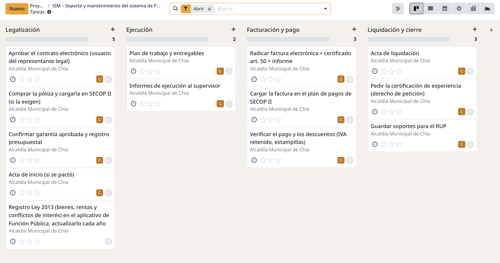
En Odoo el pago se llama «Objetivo». Cuando el supervisor recibe a satisfacción:
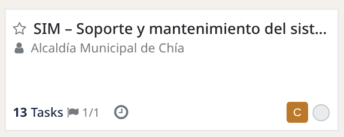
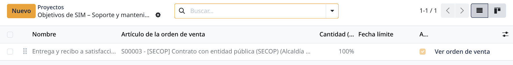
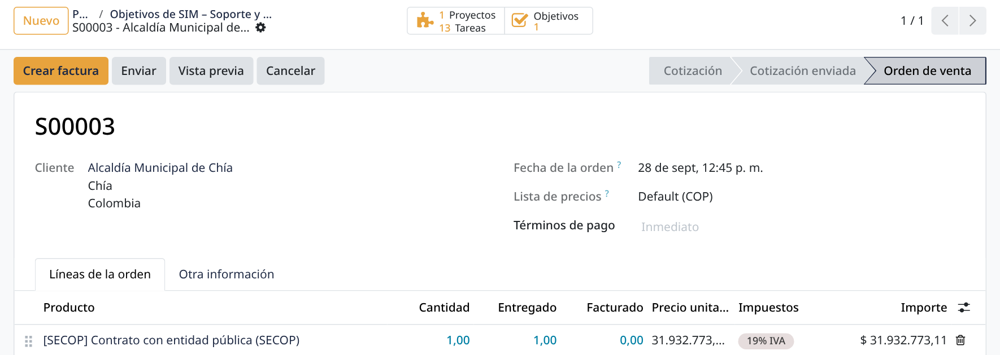
Luego emites la factura legal en la DIAN (gratis), pegas su CUFE en la factura de Odoo, la radicas en la entidad y la cargas en SECOP II. Queda en Por cobrar hasta que registras el pago. Llega menos que el total: la entidad retiene el 15 % del IVA y las estampillas, y la factura muestra el neto esperado.
Si el contrato paga en varias cuotas: en los objetivos del contrato crea uno por cuota y ponle su parte en «Cantidad (%)», por ejemplo 50 % y 50 %.
Al terminar: acta de liquidación si la piden, el derecho de petición para la certificación (Contrato → ⚙ → Imprimir) y el botón «Registrar experiencia». Desde la siguiente oferta, ese contrato entra solo en tu formato de experiencia.
El caso. La Alcaldía de Chía publica una mínima cuantía para una mesa de ayuda TIC: presupuesto de $23,8 M con IVA, cierre el viernes 9 de octubre a las 10:00 a. m. y estampillas del 4,1 %. Ejecutarlo te cuesta $14 M. El análisis de precio es real: sale de 188 procesos del nicho de los últimos 3 años.
Odoo: el monitor lo trae a «Por revisar», con el cierre en el calendario.
Tú: lees la invitación: no está limitada a MiPyME, no pide experiencia ni póliza. Te suscribes en SECOP II y lo pasas a «Preparando oferta».
Odoo: crea la cotización por $23,8 M y las 4 actividades: la 1 vence el miércoles 7, la 2 y la 3 el jueves 8, la 4 el viernes 9.
Tú: pones costo $14 M y estampillas 4,1 % en la pestaña SECOP. Odoo calcula el precio mínimo: $15,6 M sin IVA.
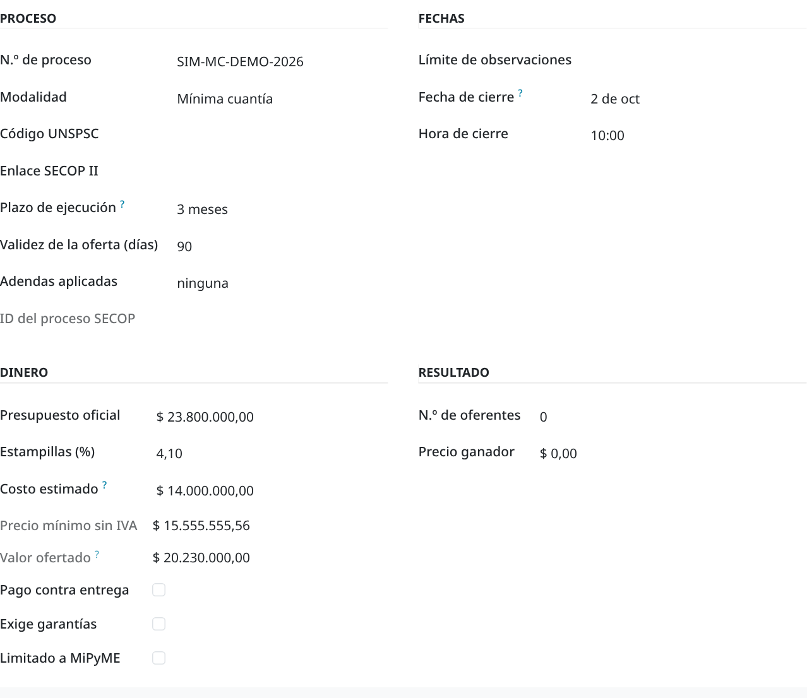
Odoo: con tu costo, el monitor calcula el precio sugerido. «Utilidad» es lo que te queda si ganas, después de IVA, SIMPLE, estampillas y costo:
| Ofertar | Prob. | Utilidad |
|---|---|---|
| $22,0 M (sugerido) | 36 % | $2,6 M |
| $20,2 M (tu oferta) | 45 % | $1,3 M |
| $19,3 M | 50 % | $0,6 M |
| $14,5 M | 70 % | −$3,0 M |
También avisa que en esa alcaldía el ganador suele ofertar mucho más barato (mediana: 50 % bajo el presupuesto) y que CREAR IMAGEN IT le ganó 4 de 4.
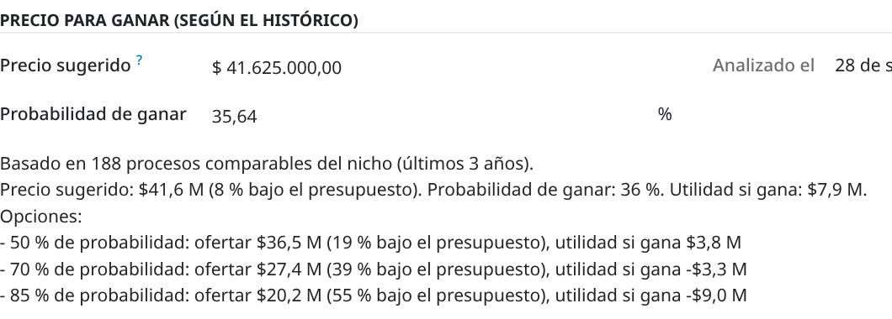
Tú: eliges $20,2 M ($17 M + IVA): ganas menos que con el sugerido, pero tienes más probabilidad, y el primer contrato vale también por la experiencia. Lo pones en la cotización.
1: la Cámara tiene más de 30 días: sacas una nueva y la subes al Kit. Hecha.
2: el precio ya está: hecha. 3: «Preparar documentos de la oferta», bajas el ZIP y firmas: hecha.
4: presentas un día antes, por seguridad: lista de precios igual a la cotización, adjuntas y presentas. SECOP II dice «Presentada»: hecha. Pasas el proceso a «Presentada».
Odoo: agenda la 5 para el domingo 11. La mueves al lunes con «Editar».
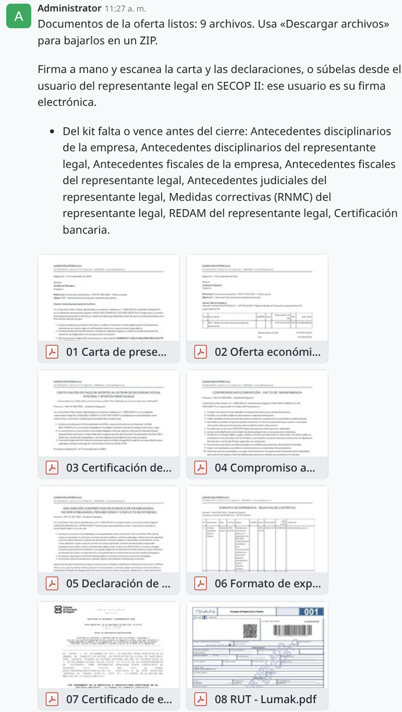
El informe te pide un RUT actualizado. Lo subes por «Mensajes» ese mismo día: la 5, hecha.
La entidad acepta tu oferta. Apruebas el contrato electrónico en SECOP II y pulsas «Ganado».
Odoo: confirma la cotización y crea el contrato con sus tareas. No piden póliza: cancelas esa tarea. Haces el registro de la Ley 2013 y esperas el registro presupuestal antes de empezar.
Entregas. Imprimes el informe de actividades y la certificación de aportes, marcas el objetivo «Alcanzado» y creas la factura (sección 4). La emites en la DIAN, la radicas y la cargas en SECOP II.
Llegan $19,05 M: los $20,23 M menos el IVA que retiene la entidad y las estampillas. Registras el pago.
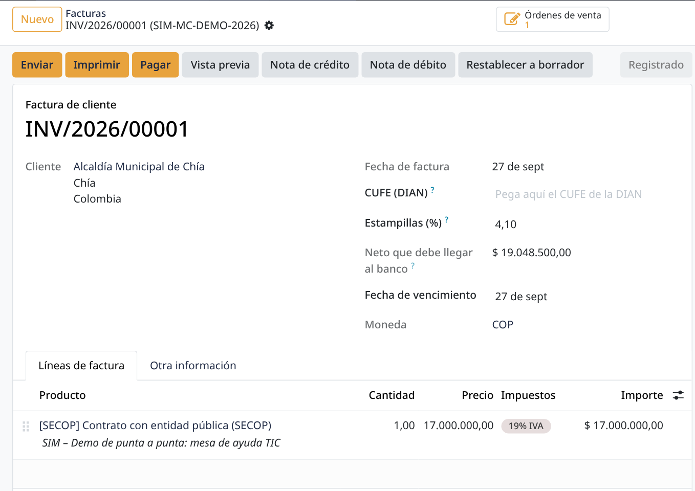
Pides la certificación y pulsas «Registrar experiencia». Desde la siguiente oferta cuenta como tuya.
Estas tareas corren solas en este computador. No usan inteligencia artificial: son fórmulas sobre el histórico de SECOP. El Tablero muestra, en «Automático», cuándo corrió cada una: punto verde si va al día, ámbar si se atrasó. Lo atrasado corre solo al prender el equipo.
| Monitor de SECOP · 7:30 a. m. | Trae los procesos nuevos del nicho a «Por revisar», calcula el precio para ganar de tus procesos abiertos y actualiza Todo lo publicado. |
| Base histórica · lunes 6:00 a. m. | Actualiza el histórico de procesos, ofertas y ganadores, del que salen Mercado y el precio sugerido. |
| Respaldo · 7:00 p. m. | Copia la base y los archivos en el computador. Una vez al mes, pasa uno a un disco externo. |
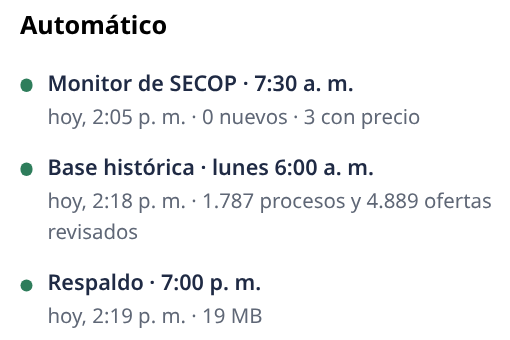
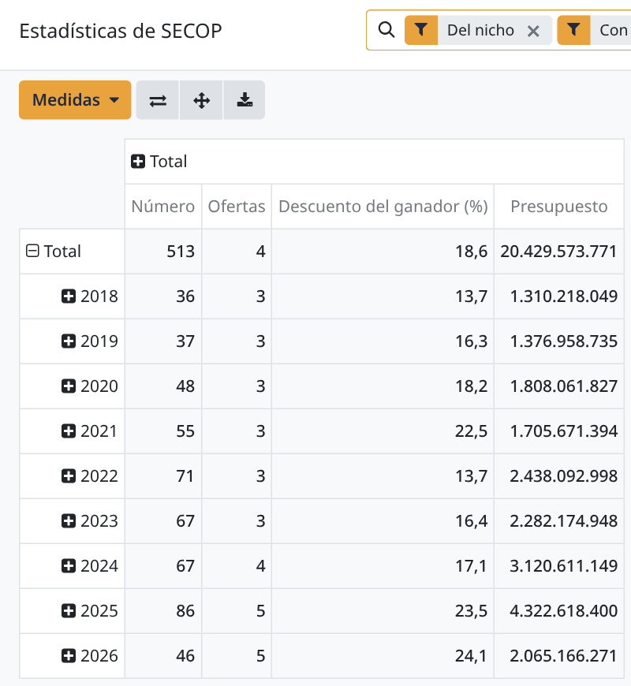
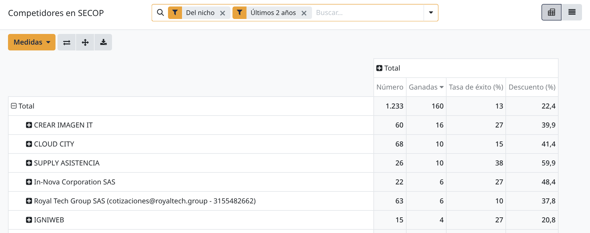
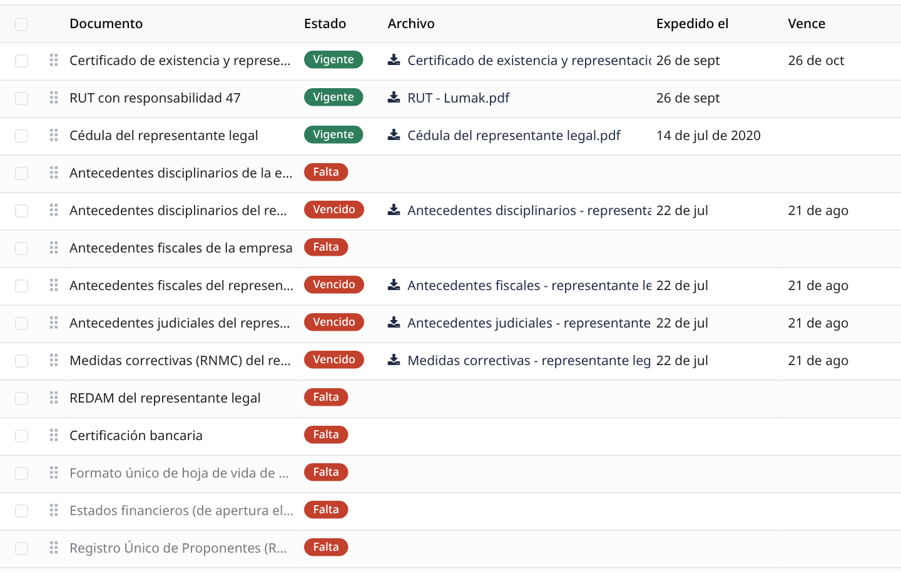
| Cada mañana | Tablero: lo rojo primero (cierres de hoy o mañana, fechas legales, facturas vencidas). Revisar lo que llegó a «Por revisar». |
| Dos veces por semana | Todo lo publicado con el filtro «Fuera de mi flujo»: lo que no es del nicho pero te puede servir. |
| Cada pago | Informe, aportes, factura en la DIAN con su CUFE en Odoo, radicar en la entidad y en SECOP II, confirmar el neto. |
| Fin de mes | Fechas del mes siguiente, renovar en el kit lo que vence y copiar un respaldo al disco externo. |
carlos administra todo; dayana ve procesos, cotizaciones y contratos, sin ajustes ni contabilidad. Se manejan en Ajustes → Usuarios y empresas → Usuarios.